Original square / fixed stepped perimeter shell / the same four physical outlines moved0.625mm per-coordinate toward the origin. All source and return pads move, while each225mm² area, role, rotation, two outputs, commonGND and50Ω remain fixed. The position contrast changes both rim clearance and separation: shell0.02345mm/3.75mm to inward0.85040mm/2.5mm. It does not isolate a rim effect. Saved scalar display only; no new solve or scoring; no candidate adopted. The first panel shows actual TOP physical contacts at skin z=0, from SHA-bound registration design loops; stepped shell outlines are native-face unions, without smoothing, convex hulls or bounding-box substitutes. Plus markers are actual area centroids; shell width/height are bounding-box spans only. Deep XY markers are projected TOP centroids, not contacts at depth or mask outlines.
Raw1Vpp and saved skin8 common-cap scale; global and explicitly clipped primary-ROI shared ranges. +z increases from skin0; primaryROI radius5mm/depth15–20mm. All3columns and both slices share each panel color range. Clipping changes display only.
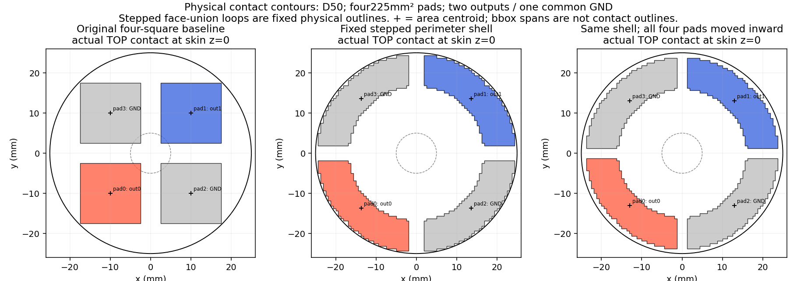
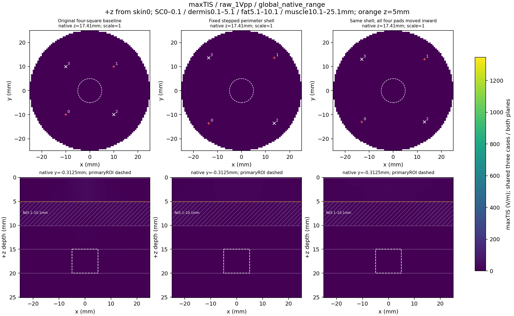
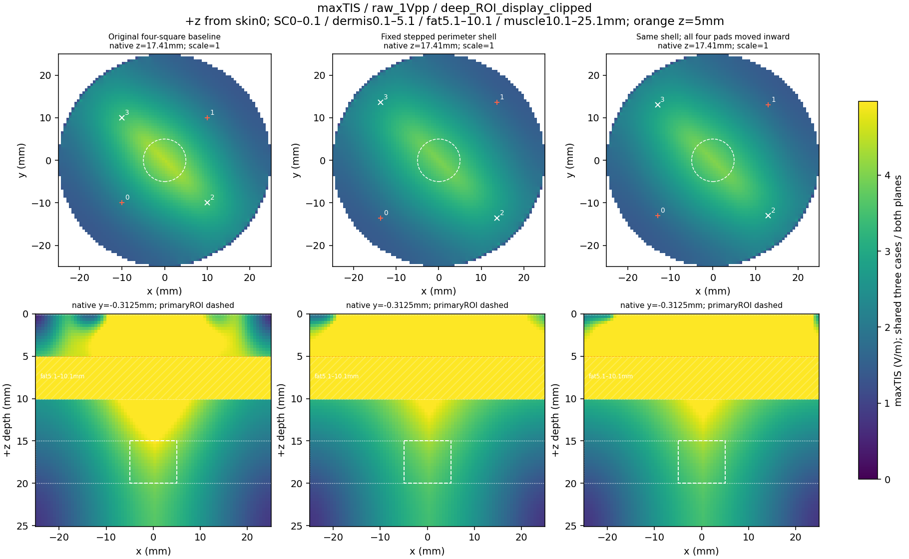
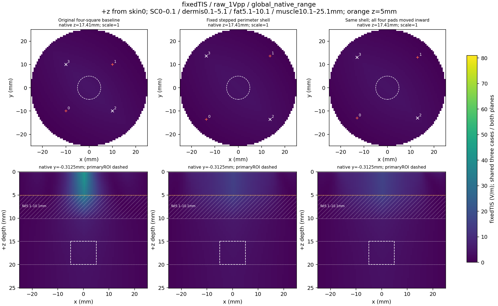
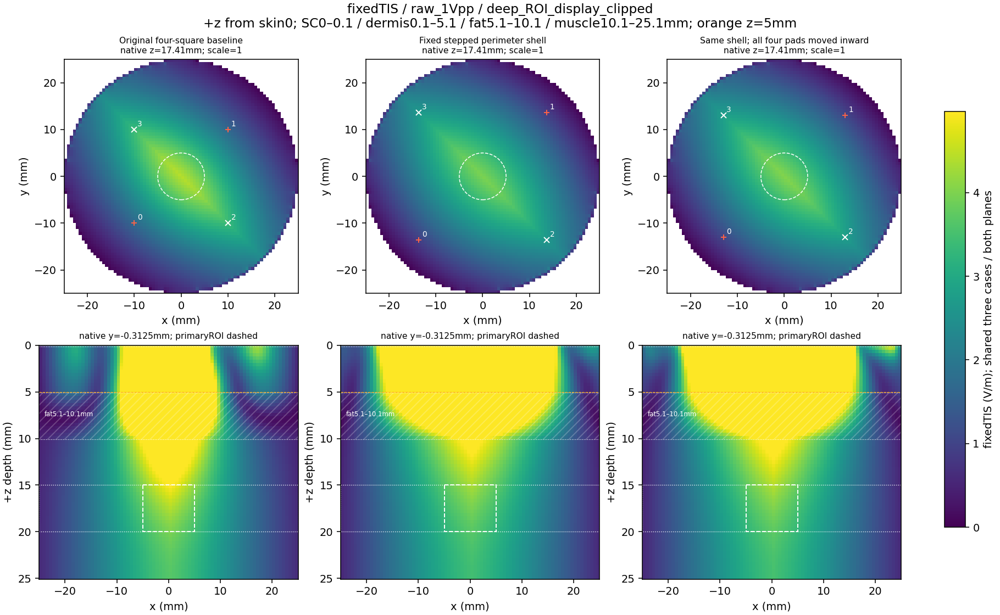
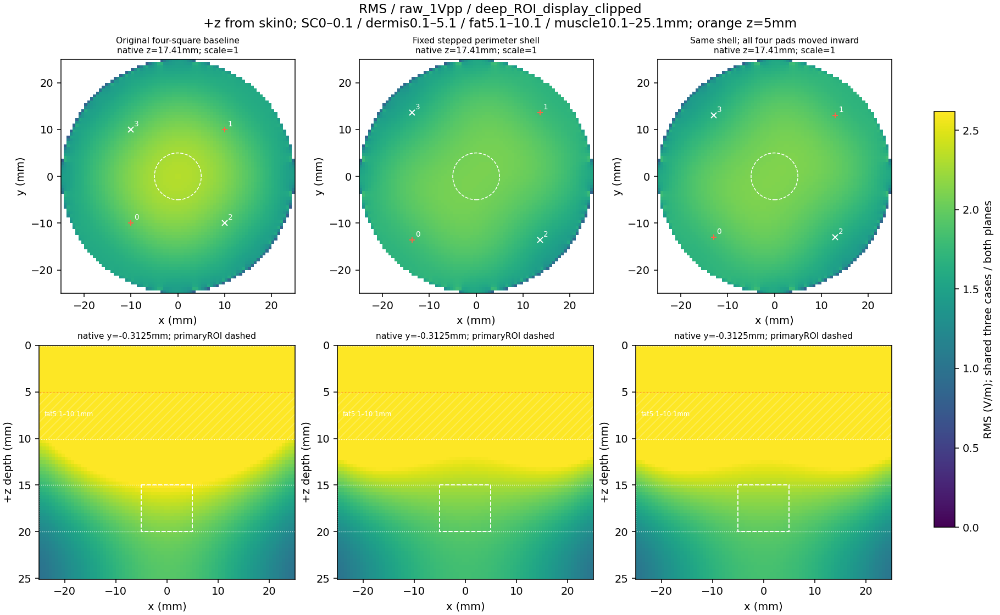
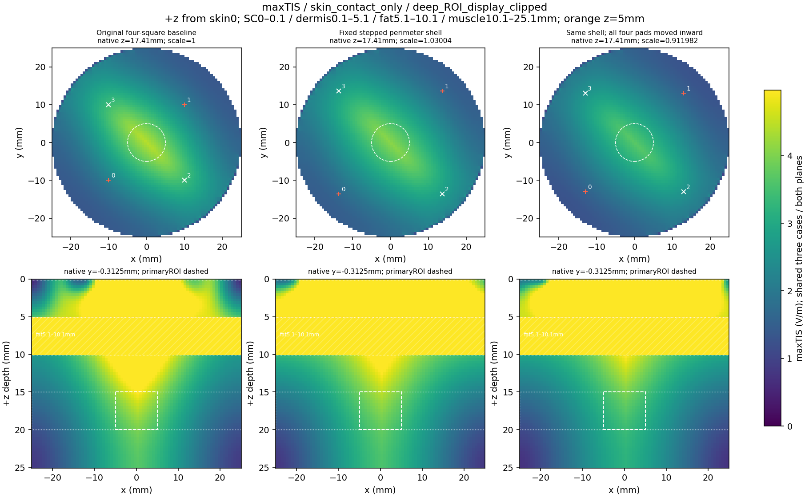
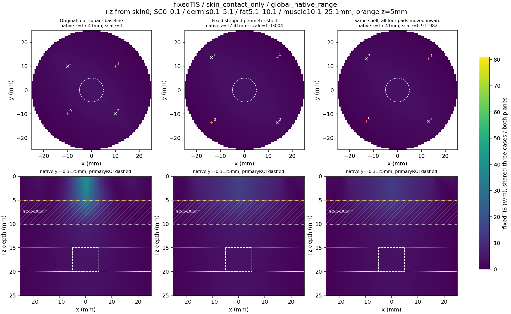
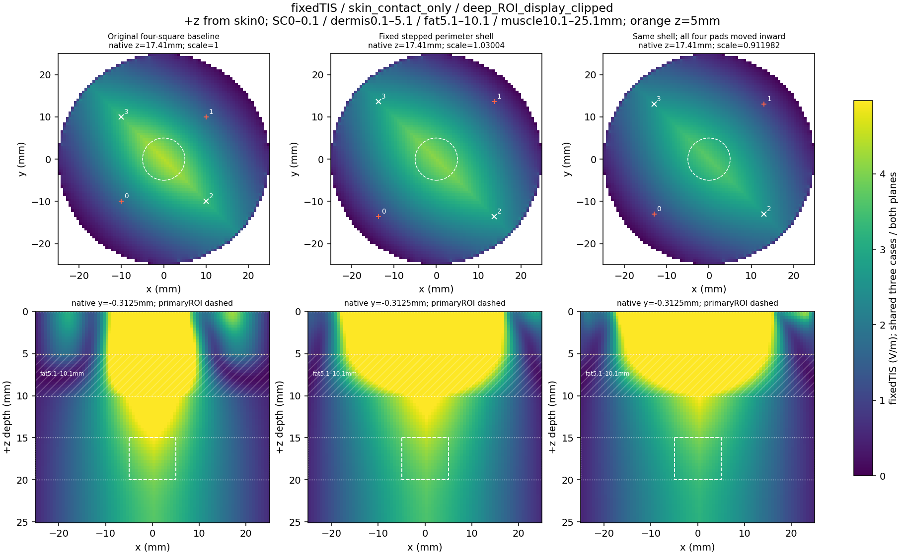
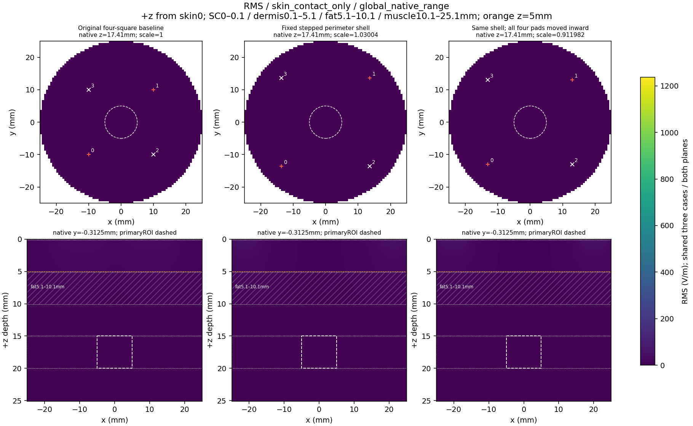
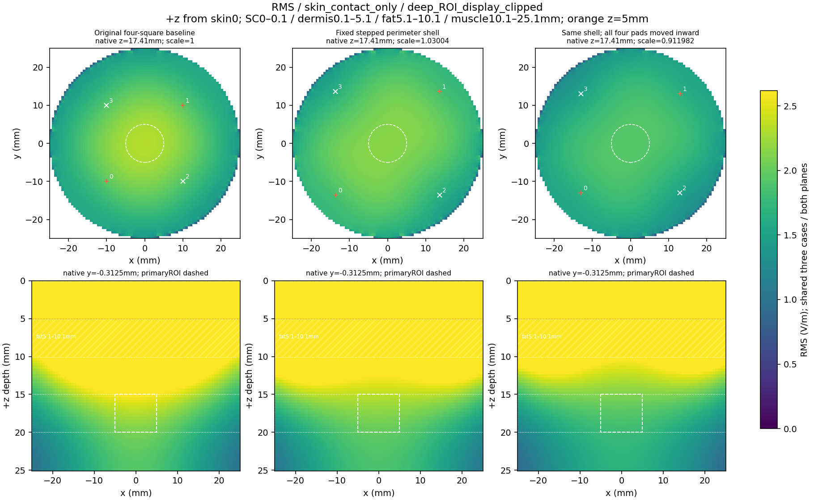